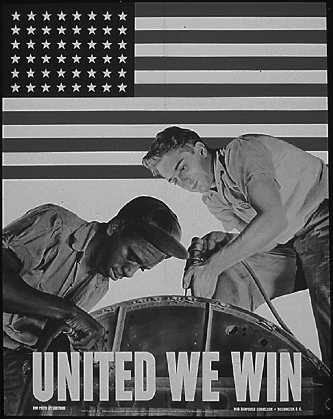

Chapter 34
STRATEGIES FOR THE SHORT-ANSWER QUESTIONS
Your APUSH exam will continue with a 40-minute section containing four short-answer questions covering topics from Native Americans before Columbus’s voyages to events and trends in the early twenty-first century. You are required to answer the first two questions. They will both cover material from Periods 3 to 8 (1754–1980). You will then answer the third OR the fourth question. Question 3 will cover Periods 1 to 5 (1491–1877), while Question 4 will cover Periods 6 to 9 (1865–2010).
Question 1 features a pair of passages by dueling historians or contrasting contemporaries. Question 2 will ask you to analyze a political cartoon or historical poster. Both prompts are followed by a set of three very focused sub-questions. Questions 3 and 4 ask you to compare the similarities and differences between two major intellectual movements, geographic regions, political movements, or legislative programs. Each question includes three specific sub-questions.
The three short-answer questions are worth 28 points, or 20 percent of your total exam score. Each of the three sub-questions is worth 3.1 points.
STRATEGY 1
Use complete sentences to answer each sub-question. You will not be awarded points for using an outline or a bulleted list of points.
STRATEGY 2
Write succinct answers. You will be given one page for each of the three questions you choose to answer. Each page contains just 23 lines. Answers that exceed these limitations will not be scored.
STRATEGY 3
Each of the three sub-parts of a short-answer question is an all-or-nothing proposition. That is, you will either receive full credit for your answer or you will receive a zero. Remember, there is no guessing penalty. Since a blank space will receive a zero, always try to write a plausible answer.
STRATEGY 4
Most of the sub-questions can be answered in a variety of ways. Your goal is therefore not to find the answer. Instead, your goal is to find and write about an answer.
SHORT-ANSWER QUESTION 1: DUELING HISTORIANS
Betraying the hopes of the world, breaking treaties and commitments, the Soviet government after World War II embarked on a new course of forcible expansion and aggression. In 1945 and 1946, Russia’s neighbors in Europe and the Far East, their territory occupied by the Red Army at the end of the fighting, were transformed into a new kind of dependencies, so-called satellites, with the Communist Party in power. Although the United States and her Western allies protested this course, Moscow remained adamant, fully aware of the inability of the Western allies to prevent this process of expansion.
— David J. Dallin, historian, Dubious Victory, 1973
It is pointless to try to place all the blame for the Cold War on either the Communist World or the so-called Free World. Can we blame dogs for being hostile to cats, or water for being incompatible with oil, or fire for reacting violently to gasoline?
Communism, by the very nature of its closed society, has a built-in hostility to open-door capitalism—a hostility that existed from the beginning and will always exist as long as the two systems keep their basic identity and ideology. In this sense the Cold War has existed since 1917, when the Communists took over in Russia and proclaimed their undying hostility to the capitalist world. Basic frictions and suspicions were temporarily ignored during the anti-Hitler war, but they were always present; and circumstances in the postwar years increased the friction as each side sought to promote its ideologically directed aims. If the West feared Communist world revolution, the Soviet leaders feared, or professed to fear, capitalist encirclement. The Cold War came so naturally that its avoidance would have been more remarkable than its occurrence.”
— Thomas A. Bailey, historian, Probing America’s Past, 1973
Using the excerpts above, answer (A), (B), and (C).
(A)Briefly describe ONE major difference between Dallin’s and Bailey’s historical interpretations of the causes of the Cold War.
(B)Briefly explain how ONE event or development from the period 1945–1953 that is not explicitly mentioned in the excerpts could be used to support Dallin’s argument.
(C)Briefly explain how ONE event or development from the period 1945–1953 that is not explicitly mentioned in the excerpts could be used to support Bailey’s argument.
ANSWERS:
(A)Dallin argues that the Soviet Union caused the Cold War by following a “new course of forcible expansion” and by deliberately “breaking treaties and commitments.” In contrast, Bailey argues that the Cold War was the inevitable result of irreconcilable differences between the United States and the Soviet Union.
(B)Soviet policy in Poland supports Dallin’s argument. Joseph Stalin broke his Yalta pledges by forbidding free elections in Poland and by installing a puppet or satellite communist regime. This intrusion into Eastern and Central Europe violated the principle of national self-determination and posed a real threat to Western Europe. As the leader of the Free World, the United States had to implement a policy of containment to block Soviet expansion.
(C)The United States formed NATO to block Soviet expansion into Western Europe. The alliance provided American forces with strategic military bases that posed a deterrence to the Soviet Union. Russian leaders responded by forming the Warsaw Pact to defend their sphere of influence in Eastern Europe. The two rival alliances support Bailey’s argument that the Cold War was an inevitable result of rivalry between the opposing political and economic systems.
SHORT-ANSWER QUESTION 2: ANALYZING AN IMAGE

National Archives, 1943
The image above was created in 1943 by the Office of War Information. It depicts workers at an integrated aircraft plant. Using the image, answer (A), (B), and (C).
(A)Briefly describe ONE specific event or development that led to the historical situation depicted in the image.
(B)Briefly describe how the image depicts the government’s point of view about the role of African American workers during the Second World War.
(C)Briefly explain ONE specific effect in the period from 1943 to 1953 of the development referenced by the image.
ANSWERS:
(A)In 1941, A. Philip Randolph and other African American leaders planned a march on Washington, D.C., to protest racial discrimination in defense industries. President Roosevelt avoided the march by issuing Executive Order 8802, prohibiting ethnic or racial discrimination in the nation’s defense industry. The order marked the first time since Reconstruction that the federal government committed itself to opposing racial discrimination.
(B)The image depicts a white and black worker working together to build an aircraft that will be used to defend America’s way of life. The image underscores the important role African American workers are playing in the war effort.
(C)The image was part of the African American “Double V” campaign to achieve victory over fascism abroad and over racism at home. In the decades following the Second World War, the Double V campaign led to notable successes in the campaign to fight racial discrimination. For example, in 1947 Jackie Robinson became the first African American Major League Baseball player. The following year President Truman issued an executive order abolishing racial discrimination in the U.S. Armed Forces.
SHORT-ANSWER QUESTION 3: MAKING COMPARISONS
Answer (A), (B), and (C). Confine your response to the period from 1607 to 1776.
(A)Briefly describe ONE specific difference between the British West Indies colonies and the Chesapeake colonies in the years between 1607 and 1776.
(B)Briefly describe ONE specific similarity between the British West Indies colonies and the Chesapeake colonies in the years between 1607 and 1776.
(C)Briefly describe ONE specific historical effect of the difference between the British West Indies colonies and the Chesapeake colonies in the years between 1607 and 1776.
ANSWERS:
(A)The British West Indian sugar plantations created a society consisting of a fabulously wealthy planter elite, a vast population of enslaved Africans, and a small number of white foremen and managers. The Chesapeake tobacco plantations also produced a society dominated by a wealthy planter elite. However, the Chesapeake colonies had a much larger number of yeoman white farmers than did the British West Indies colonies.
(B)Plantations devoted to producing cash crops dominated the economies of both the British West Indies and the Chesapeake colonies. Plantations in the British West Indies produced sugar, while those in the Chesapeake produced tobacco. Planters in both regions relied upon a large body of enslaved Africans.
(C)The tobacco planters and white yeoman farmers in Virginia and Maryland supported the growing movement to declare independence from Great Britain. In contrast, the wealthy sugar planters in the West Indies remained loyal to the British Crown.
SHORT-ANSWER QUESTION 4: MAKING COMPARISONS
Answer (A), (B), and (C).
(A)Briefly describe ONE similarity between New Deal and Great Society objectives and programs.
(B)Briefly describe ONE difference between New Deal and Great Society objectives and programs.
(C)Briefly explain ONE reason for a difference between New Deal and Great Society objectives and programs.
ANSWERS:
(A)Both the New Deal and the Great Society addressed the needs of America’s senior citizens. For example, the New Deal’s Social Security Act created a federal pension system funded by taxes on a worker’s wages and by an equivalent contribution by employers. The Great Society created the Medicare and Medicaid programs to address the pressing health care needs of America’s senior citizens.
(B)The New Deal did not directly confront racial injustice. For example, Civilian Conservation Corps camps were often racially segregated. In contrast, the Great Society directly addressed the legacy of Jim Crow segregation. For example, the landmark Civil Rights Act of 1964 banned discrimination in public facilities, while the Voting Rights Act of 1965 ended literacy tests and other devices used to prevent African Americans from voting.
(C)FDR and his “brain trust” advisors designed the New Deal to confront a grave economic crisis. As a result, the New Deal focused on programs designed to provide economic relief, recovery, and reform. In contrast, LBJ conceived the Great Society during a period of unprecedented economic prosperity. As a result, the Great Society did not have to address a severe banking crisis and instead focused on an “unconditional War on Poverty.”